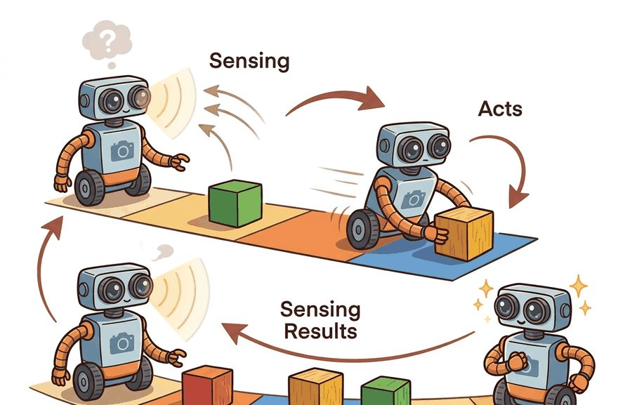
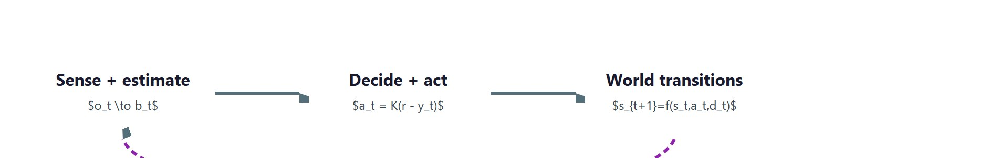
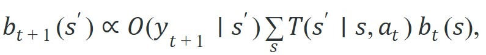
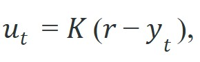
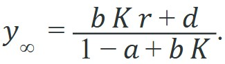
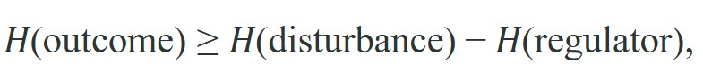

"I sensed, therefore I acted. Then I had to sense what acting had done."
A Reflective Mobile Robot

This section assumes familiarity with the static-versus-embodied distinction introduced in section 1.1. The five-step loop formalized here (sense, estimate, decide, act, observe) is refined throughout the book: section 2.7 treats partial observability in depth, section 8.6 develops the recursive Bayesian estimator that fills the estimate step, and section 7.1 analyzes open-loop control as the degenerate case where the feedback path is cut. In Part 8, sections 38.3 and 40.2 show how the loop's transition model $f$ can be learned rather than hand-specified.
Intelligence that never acts cannot be tested, and intelligence that acts but never re-senses the result is flying blind. The perception-action loop closes that gap: an agent senses, estimates the state it cannot see directly, decides, acts, then senses the consequence and folds it back in. A world is what supplies those consequences. The argument of this section is that the loop is not an implementation detail wrapped around a model; it is the thing that makes robust behavior possible under disturbance and partial information, and the cybernetic tradition formalized exactly why.

Aim a thrown dart with your eyes closed and you can still compute a perfect release, yet the dart misses, because the one input you refused to use was the sight of where the last dart landed. That refusal is the whole difference this section is about, drawn in Figure 1.2A as a single cycle: a sensory signal from the world enters the agent, a decision is formed, an action changes the world, and the changed world is what the agent senses next. A static model is graded once and stops. An embodied agent issues a command into a world whose response it must then sense, and that response is what tells the agent whether the command did what it intended. Strip away the sensing of the consequence and you are left with open-loop control: the agent computes a plan from its initial knowledge and executes it blind. Open-loop control works only when the world matches the model exactly. The moment friction, payload, wind, a miscalibrated actuator, or another agent perturbs the system, the executed plan and the actual outcome diverge with nothing to pull them back together. A plan that cannot sense its own failure is not control; it is a wish.
Write the world as a transition $s_{t+1} = f(s_t, a_t, d_t)$, where $d_t$ is an unmodeled disturbance, and let the agent observe $y_t = h(s_t) + n_t$ through a sensor with noise $n_t$. Open-loop control chooses the whole action sequence $a_0, a_1, \ldots$ ahead of time from $s_0$ alone. Closed-loop (feedback) control instead computes each action from the latest measurement: $a_t = \pi(y_0{:}t)$. The difference is the entire subject. Feedback is the only mechanism by which information about $d_t$, which by definition was never in the model, can re-enter the controller; it enters through its effect on the measured signal $y_t$.
Figure 1.2 lays out these three stages as a closed path, sense-and-estimate ($o_t \to b_t$), decide-and-act ($a_t = K(r - y_t)$), and world transition ($s_{t+1}=f(s_t,a_t,d_t)$), with the dashed arrow marking the fed-back measurement that rejects the disturbance. The loop is five recurring operations executed every cycle: sense ($y_t = h(s_t)+n_t$), estimate state or belief ($b_t = \mathrm{update}(b_{t-1}, a_{t-1}, y_t)$), decide ($a_t = \pi(b_t)$), act (apply $a_t$ to the world), and observe the consequence ($y_{t+1}$), which feeds the next cycle. When the true state is hidden, the estimate step is a recursive Bayesian update,

The transition model $T$ pushes the belief forward through the action, and the observation model $O$ reweights it by the new evidence. The prediction term makes a probing action valuable before it reaches the goal: an action that sharpens $b_{t+1}$ pays off even when it makes no direct task progress. Consider the scale of that payoff. In practice, on partially observed navigation benchmarks of this kind, a policy that never probes (always acting greedily toward the goal) typically needs on the order of tens of thousands of training episodes to converge, while a policy that occasionally takes an information-gathering detour typically converges roughly two orders of magnitude faster, because each probing step collapses uncertainty that the greedy policy must otherwise resolve by stumbling through failure after failure. Partial observability is the normal case, not an exception. Cameras do not see behind objects, lidar misses glass, tactile sensors report contact only after contact, and a language instruction omits the operational state entirely. An agent that assumes full observability builds a controller for a world it is not in.
Think of the belief update like tasting a sauce before you season it. Lifting the spoon to your lips is a "probing action" that produces no sauce and moves you no closer to a finished dish, yet it pays off enormously: the taste collapses your uncertainty about the current salt level, so every subsequent addition is calibrated rather than guesswork. Skipping the taste (acting without sensing) is open-loop cooking: your seasoning plan was built from an earlier, possibly stale estimate of the sauce's state, and any drift since then lands unnoticed on the table. The Bayesian update is exactly that tasting step, reweighting everything you believed about the sauce's state by the new evidence on your tongue.
Input: prior belief $b_{t-1}$, previous action $a_{t-1}$, reference signal $r$, transition model $T(s' \mid s, a)$, observation model $O(y \mid s)$, policy $\pi$, gain $K$
Output: updated belief $b_t$, action $a_t$ issued to the world
Trace the scalar plant $y_{t+1} = a\,y_t + b\,u_t + d$ with $a=0.8$, $b=0.5$, $d=0.3$, reference $r=1.0$, proportional gain $K=1.0$, starting from $y_0=0$. Each cycle: measure $y_t$, form the error $e_t = r - y_t$, command $u_t = K\,e_t$, then let the world transition.
Cycle 0. Measure $y_0 = 0$. Error $e_0 = 1.0 - 0 = 1.0$. Command $u_0 = 1.0 \times 1.0 = 1.0$. World: $y_1 = 0.8(0) + 0.5(1.0) + 0.3 = 0.800$.
Cycle 1. Measure $y_1 = 0.800$. Error $e_1 = 1.0 - 0.800 = 0.200$. Command $u_1 = 0.200$. World: $y_2 = 0.8(0.800) + 0.5(0.200) + 0.3 = 1.040$.
Cycle 2. Measure $y_2 = 1.040$. Error $e_2 = -0.040$. Command $u_2 = -0.040$. World: $y_3 = 0.8(1.040) + 0.5(-0.040) + 0.3 = 1.112$.
The output overshoots $r$ slightly, then the negative error pulls it back. It settles at $y_\infty = (bKr + d)/(1 - a + bK) = (0.5 + 0.3)/0.7 = 1.143$, leaving the small offset $0.143$ predicted by the formula. The disturbance $d=0.3$ never entered the controller; it was sensed only through its effect on each measured $y_t$ and absorbed by the error term.
The cleanest instance is a regulator holding a measured signal $y_t$ at a reference $r$. The proportional feedback law is

where $e_t = r - y_t$ is the tracked error and $K$ is the gain. Consider a scalar plant $y_{t+1} = a\,y_t + b\,u_t + d$ with a constant disturbance $d$. Under open-loop control with a precomputed $u$, the steady state settles at $y_\infty = (b\,u + d)/(1-a)$, so the disturbance $d$ appears undiminished in the output: there is no term that cancels it. Under proportional feedback the closed-loop steady state is

As the loop gain $bK$ grows, where the loop gain is the product of the plant input sensitivity $b$ and the controller gain $K$, measuring how strongly a unit of error is amplified once around the loop, $y_\infty \to r$ and the contribution of $d$ shrinks like $1/(bK)$. That $1/(\text{loop gain})$ shrinkage is the mathematical content of disturbance rejection, and it is unavailable to any open-loop scheme because no precomputed sequence can reference a disturbance it never saw. To see the gap in a single number: with $a=0.8$, $b=0.5$, $d=0.3$, and $K=1$, the open-loop steady-state error is 1.50 while the feedback error is 0.14, a ten-fold reduction from a proportional law with no knowledge of $d$ whatsoever.
An open-loop plan cannot reject $d_t$ because $d_t$ was, by construction, absent from the model used to build the plan. Feedback does not need a model of $d_t$: it senses the disturbance's effect on $y_t$, converts it into the error $r - y_t$, and acts on that error. This is why a feedback law, or an internal world model that keeps predicting and correcting, is required for robust behavior under disturbance and partial information. The robustness comes from re-sensing the consequence, not from a better plan.
Who: Robotics software engineer at a mid-size e-commerce fulfillment startup (30-person engineering team).
Situation: The team was deploying a fleet of autonomous shelf-scanning robots that used dead-reckoning (open-loop position integration from wheel odometry alone, with no external reference) to navigate warehouse aisles and report inventory positions.
Problem: Floor wax applied overnight changed wheel slip coefficients unpredictably. By morning the robots' open-loop position estimates drifted up to 40 cm, causing missed scans and false out-of-stock reports.
Dilemma: They could recalibrate the odometry model each morning (expensive, manual, still open-loop), or close the loop by fusing odometry with overhead QR-code fiducial readings using a proportional correction on the position error. The first option felt safer because it touched no control code; the second required adding a feedback term that staff worried would oscillate.
Decision: They closed the loop with fiducial feedback, accepting a small correction gain after confirming the stable gain range on a simulated scalar plant in python-control.
How: Using python-control to verify stability margins and OpenCV for fiducial detection at 10 Hz, they applied $u_t = K(r - y_t)$ with $K = 0.4$ on the lateral position error, keeping the closed-loop pole (the value $a - bK$ from the stability check in step 7 of the algorithm above; the loop is stable exactly when this value stays inside the unit circle, $|a-bK|<1$) safely inside the unit circle.
Result: Position error at aisle-end dropped from 40 cm to under 3 cm; false out-of-stock alerts fell by 87% in the first week.
Lesson: Open-loop calibration fights the last disturbance; closing the loop with a cheap sensor rejects every future one without needing to model it.
None of the machinery in the regulator above, the error term, the disturbance rejection, the gain that trades speed against stability, is new; it was named and proved decades before the first deep network. The loop was formalized before modern AI existed. Wiener's Cybernetics (1948) named feedback as the common principle of control and communication in the animal and the machine, and made the point, central to this book, that purposive behavior is negative feedback from its own results, not a plan executed forward from initial conditions. Ashby's Introduction to Cybernetics (1956) gave the loop a hard quantitative constraint, the law of requisite variety: a regulator can hold a system's outcome within a target set only if the regulator commands at least as much variety (in the information-theoretic sense) as the disturbances it must counter. Stated compactly, with $H$ for entropy, the residual variety of the outcome is bounded below by

so under-actuated or under-sensing controllers cannot regulate a high-variety environment no matter how the policy is tuned.
Requisite variety is the universe's way of telling you that a thermostat with two settings cannot regulate a weather system with infinitely many moods: the regulator's vocabulary of responses must be at least as rich as the disturbances it is arguing with.
So far: Wiener named feedback from an agent's own results as the principle behind purposive behavior, Ashby's law of requisite variety then bounded what any such feedback loop can achieve (a regulator needs at least as much variety as the disturbances it faces), and the entropy inequality above states that bound quantitatively. The next concept, Powers' perceptual control theory, keeps this same loop but changes what is being regulated.
Powers' perceptual control theory (1973) inverted the usual reading of the loop. An organism does not control its output; it controls its perception, acting to bring a sensed variable to an internal reference. This reframing matters for physical robots because it drops the assumption that anyone can precompute the correct output. The agent keeps acting until its sensed signal matches the reference, and it absorbs mechanical compliance, joint flex, and surface irregularities without naming them as disturbances. A hierarchy of reference signals passed downward supplies the mechanism. A high-level goal sets the reference for a mid-level perceptual variable, which sets the reference for a lower-level one, down to raw joint torques. Each level corrects only its own sensed error, so higher levels stay insulated from low-level physical noise that the body's inner loops already suppress. All three threads converge on the same object that control theory states most operationally: a controller drives the difference between a reference signal $r$ and a measured signal $y_t$ toward zero. Brooks' "Intelligence without representation" (1991) pushed the lineage to its limit, arguing that tight perception-action loops coupled directly to the world can produce competent behavior with little or no central model at all.
Wiener, Ashby, and Powers each argued in words that feedback rejects what no plan ever saw; the cleanest way to believe it is to watch the two strategies diverge on a plant you can run in thirty lines.
Before reading on, guess: by how much does proportional feedback reduce the steady-state error caused by an unmodeled disturbance, compared to open-loop control on the same plant? In informal polling, engineers seeing this setup for the first time typically guess a 2x to 3x improvement. The answer, for even a modest gain, is typically closer to 10x, and the math below traces the reason: the disturbance's contribution shrinks like $1/(\text{loop gain})$.
The script regulates a scalar plant $y_{t+1} = a\,y_t + b\,u_t + d$ toward a setpoint $r$, with a constant disturbance $d$ that neither controller was told about. The open-loop controller computes the single command that would hit $r$ for the modeled plant and applies it forever. The feedback controller ignores $d$ entirely and acts on the measured error $r - y_t$ each step.
# Setpoint regulation under an unmodeled disturbance.
# Open-loop applies a precomputed command; feedback acts on the measured error r - y.
a, b = 0.8, 0.5 # scalar plant: y_next = a*y + b*u + d
r = 1.0 # setpoint (reference signal)
d = 0.3 # disturbance the controllers were NOT told about
K = 1.0 # proportional feedback gain (keeps pole a - b*K = 0.3 stable)
# Open-loop command assumes d == 0: solve r = a*r + b*u -> u = r*(1-a)/b
u_open = r * (1 - a) / b
def simulate(feedback, steps=40):
y = 0.0
for _ in range(steps):
u = K * (r - y) if feedback else u_open # closed loop vs fixed command
y = a * y + b * u + d # disturbance enters every step
return y
y_open = simulate(feedback=False)
y_fb = simulate(feedback=True)
print(f"open-loop steady-state y = {y_open:.4f} (error {r - y_open:+.4f})")
print(f"feedback steady-state y = {y_fb:.4f} (error {r - y_fb:+.4f})")
print(f"feedback rejects {100 * (1 - abs(r - y_fb) / abs(r - y_open)):.1f}% of the open-loop error")open-loop steady-state y = 2.5000 (error -1.5000), feedback steady-state y = 1.1429 (error -0.1429), feedback rejects 90.5% of the open-loop error. The open-loop command was correct for the modeled plant, so its entire residual error is the disturbance it could not see. Feedback never models $d$; it senses $d$'s effect on $y$ and cancels most of it, leaving the small steady-state offset $d/(1-a+bK)$ predicted above. Raising $K$ shrinks that offset, but here the stable range is bounded by $|a - bK| < 1$, that is $K < 3.6$; push past it and the loop oscillates, which is the latency-and-gain trade the next section develops.When you vary K in the simulate() function, always verify that steps is large enough to reach steady state before reading y. The closed-loop settling time is roughly 3 / abs(log(abs(a - b*K))) steps; with a=0.8, b=0.5, K=0.1 the dominant pole is at 0.75 and settling takes over 30 steps, so the default steps=40 barely converges and a comparison against the analytical formula will look wrong. A quick check: run simulate(..., steps=200) and confirm the result changes by less than 1e-6 before treating it as the true steady state. Alternatively, call python-control's control.feedback(control.tf([b], [1, -a]), K).dcgain() to read the exact steady-state value algebraically and use the simulation only to verify, not to derive.
The hand-coded plant and gain above are deliberately minimal. The python-control package gives you the same loop as composable transfer-function or state-space objects: build the plant, close the loop with feedback(), and read steady-state error, disturbance rejection, and stability margins directly instead of re-deriving $y_\infty = (bKr + d)/(1-a+bK)$ by hand. It replaces the manual algebra and the by-hand stability checks once your plant is more than one scalar state. Use the toy here to see why feedback works; reach for python-control the moment the plant has dynamics worth analyzing.
Feedback is not free, and the same gain that rejects a disturbance can destabilize the loop. Three failure modes appear repeatedly in physical systems.
Loop latency. A Franka Panda arm running Cartesian impedance control at 1 kHz has roughly 1 ms of round-trip latency from encoder read to torque command. Adding a vision pipeline that runs at 30 Hz inserts a 33 ms stale-frame window: the controller acts on a joint-space estimate that is 33 control cycles old. A gain $K$ that is stable at 1 ms delay becomes an oscillator at 33 ms because the phase margin, where the phase margin is the amount of extra phase lag the loop can tolerate before its feedback turns from correcting to reinforcing and it oscillates, shrinks by $2\pi f \cdot \Delta t$ radians per Hz of control bandwidth. Boston Dynamics Spot's onboard locomotion controller uses a 500 Hz inner loop precisely to keep this margin large enough that the outer navigation planner, running at 10 Hz, cannot destabilize the leg joints even when its commands are 50 ms stale.
Integrator windup. When a legged robot's hip actuator hits its torque limit during stair climbing, an integral term in the position controller keeps accumulating the tracking error at roughly 0.5 rad/s per second of saturation. When the leg clears the step and the saturation lifts, that accumulated integral fires a large overshoot torque, 10 to 20 Nm on typical hobby-grade actuators, enough to throw the contact point past the desired foothold. Anti-windup clamping, or switching to a pure proportional law during saturation, prevents this at the cost of slower disturbance rejection in steady state.
Stale state. A manipulation policy trained on wrist-camera images at 30 fps will silently run open-loop if a single dropped USB frame stretches the sensing interval to 66 ms. On a Franka Panda grasping a 200 g object at 0.3 m/s, the hand travels 20 mm in 66 ms, exceeding the typical 15 mm grasp-closure tolerance. The policy never announces the dropout; it simply acts on the last good frame, effectively freezing the feedback path. Timestamping every observation and enforcing a maximum-age threshold (typically one to two control periods) is the only reliable guard.
All three share one signature: the error fed to $K(r - y_t)$ no longer reflects the current world state, so the loop loses the property that made feedback superior to open-loop control in the first place.
Direction 1: Closing the loop with large-scale learned world models. Rather than hand-specifying the transition $f$, recent work trains it from internet-scale video and robot data. Google DeepMind's Genie 2 (2024) generates interactive 3-D environments from a single image and allows an agent to close a real-time perception-action loop inside the generated world, demonstrating that the estimate-act-observe cycle can operate entirely within a learned simulator without a physics engine.
Direction 2: Asynchronous and event-driven feedback loops. Classical control assumes a fixed $\Delta t$ between sense and act. Researchers at Carnegie Mellon and MIT (2024-2025) are investigating event-driven loop architectures in which the sensing step fires on detected change rather than on a clock tick, cutting latency during rapid disturbances while reducing computation during quiescent phases. Genesis (Zhou et al., 2024), a differentiable physics simulator released by MIT, lets gradients flow through the loop itself, enabling policies that learn when to sense as well as what to do.
Direction 3: Long-horizon loop closure via vision-language action models. $\pi_0$ (Physical Intelligence, 2024) and OpenVLA (Kim et al., 2024) ground each step of the perception-action loop in a vision-language model backbone, so the estimate step can incorporate free-text goal descriptions and cross-object semantic context that classical state estimators cannot represent. The open question is how to keep the high-level semantic feedback and the low-level kinematic feedback synchronized without introducing the stale-state failure described in the warning above.
Open problem for PhD research: All three directions assume the agent can detect when its world model has drifted from the real system. A tractable dissertation project is to design a lightweight, online drift detector that operates on the residuals of the belief update, signals when $b_t$ has diverged beyond a threshold, and triggers targeted re-sensing or model correction, without halting the loop or requiring privileged ground-truth state. The challenge is bounding false-alarm rates under the partial observability and sensor noise typical of unstructured manipulation tasks.
A common assumption is that a sufficiently accurate internal model removes the need for the feedback loop: if the model is good enough, the agent can plan the entire action sequence in advance and execute it without re-sensing. This is wrong in embodied AI because the world always contains disturbances, compliance, and latency that no model captures exactly; the term $d_t$ in $s_{t+1} = f(s_t, a_t, d_t)$ is precisely the part that was absent from the model used to build the plan. The correct mental model is that re-sensing the consequence of each action is not an optimization over a better model; it is the only mechanism by which information about $d_t$ can reach the controller at all, and no amount of model improvement substitutes for that closed feedback path.
Intelligence needs a world because a world is what returns the consequence of an action, and re-sensing that consequence is the only way unmodeled disturbances and hidden state can be corrected. Open-loop control executes a plan blind and lets disturbances pass through undiminished; closed-loop control acts on the measured error $r - y_t$ and rejects them in proportion to loop gain. Every later technique in this book, from state estimation to learned world models, is a way of running this loop better.
In Code 1.2.1, sweep the gain $K$ over $\{0.5, 1, 2, 3\}$ and record the feedback steady-state error each time. Confirm it follows the predicted offset $d/(1-a+bK)$, and confirm that crossing $K = 3.6$ (where $|a - bK| = 1$) makes the loop diverge. Then insert a one-step actuator delay (apply $u$ computed from the previous step's $y$) and re-run the sweep. At which $K$ does the delayed loop start to oscillate, and what does that say about the latency warning above?
Take a system you know that is currently run open-loop (a timed sprinkler, a dead-reckoning step counter, a fixed-throttle cruise setting). Identify the disturbance $d_t$ it cannot reject, the signal $y_t$ you would have to measure to close the loop, and the reference $r$. State what new sensor the closed-loop version requires, and connect that requirement to Ashby's law of requisite variety.
Goal: feel, empirically, why re-sensing the consequence beats executing a precomputed plan, by comparing an open-loop command sequence against a closed-loop proportional controller on the same physical task under a disturbance neither was told about.
Tools needed: Python with gymnasium (pip install gymnasium) and the CartPole-v1 environment; optionally matplotlib to plot the cart position over time. Budget 15 to 30 minutes.
Steps: (1) Run an episode where you record the closed-loop controller's actions: at each step compute the pole-angle error and act with $a_t = \mathrm{sign}(K \cdot \theta_t)$ for a chosen gain $K$. Log the full action list. (2) Reset the environment with the same seed and replay that exact recorded action list open-loop, ignoring all new observations. (3) Now add a disturbance: every 20 steps, apply two extra pushes in one direction (or reset with a small perturbation), and run both the live closed-loop controller and the replayed open-loop sequence again.
What to vary: the gain $K$, the disturbance magnitude and frequency, and the seed used for replay versus live runs.
What to observe: without disturbance, the replayed open-loop sequence balances the pole nearly as long as the live controller, because the world matched the recording. The instant you inject the disturbance, the open-loop replay falls within a handful of steps while the closed-loop controller corrects and keeps balancing. That divergence, appearing only once the world stops matching the plan, is the whole argument of this section made visible: feedback rejects what no plan ever saw.
Beginner (weekend): Setpoint regulator in Gymnasium. Build a proportional feedback controller for the CartPole-v1 environment in Gymnasium, holding the pole upright by acting on the angle error each step; the key challenge is choosing a gain $K$ that rejects the pole's natural instability without crossing into oscillation. Intermediate (1-2 weeks): Disturbance rejection on a simulated robot arm in MuJoCo. Use MuJoCo (via dm_control) to implement the five-step perception-action loop on a reacher task, injecting random torque disturbances each step and comparing open-loop versus closed-loop steady-state error; the key challenge is wiring the Bayesian belief update to the noisy joint-angle observations so the controller remains stable under sensor noise. Advanced (2-4 weeks): Closed-loop manipulation with LeRobot. Use the LeRobot framework to train a diffusion policy on a pick-and-place task, then deliberately drop frames from the wrist camera to simulate stale-state failure and measure how performance degrades; the key challenge is adding a maximum-age timestamp guard that switches the controller to a safe hold action when the feedback path goes stale.
Section 1.3 names the pieces of the loop precisely: agents, environments, observations, actions, rewards, and constraints.
Sutton, R. S., and Barto, A. G. "Reinforcement Learning: An Introduction." 2nd ed. MIT Press (2018). http://incompleteideas.net/book/the-book-2nd.html
The modern reference for the loop as a learning problem: belief, policy, return, and on-policy correction over the agent-induced state distribution.
Brooks, R. A. "Intelligence without representation." Artificial Intelligence 47 (1991): 139-159. https://people.csail.mit.edu/brooks/papers/representation.pdf
Argues that tight perception-action loops coupled directly to the world produce competent behavior with minimal central representation. The empirical case for the loop as primary.
Ashby, W. R. "An Introduction to Cybernetics." Chapman & Hall (1956). http://pespmc1.vub.ac.be/books/IntroCyb.pdf
Source of the law of requisite variety: a regulator needs at least as much variety as the disturbances it must counter. The quantitative bound on what any closed loop can achieve.
Wiener, N. "Cybernetics: or Control and Communication in the Animal and the Machine." MIT Press (1948).
The founding text. Names negative feedback as the principle behind purposive behavior in organisms and machines, the conceptual root of the perception-action loop.